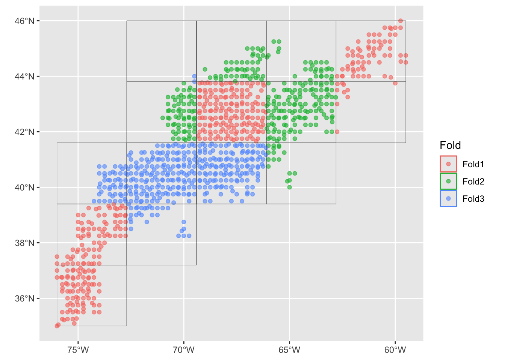
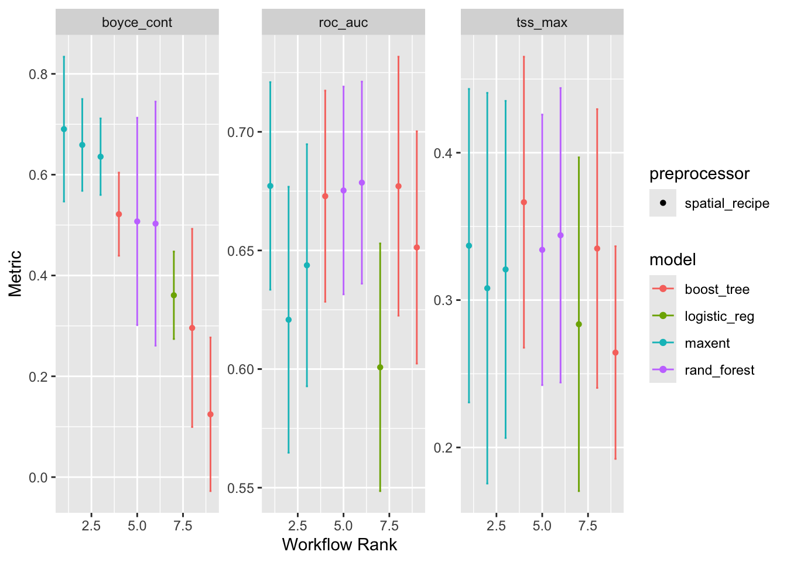
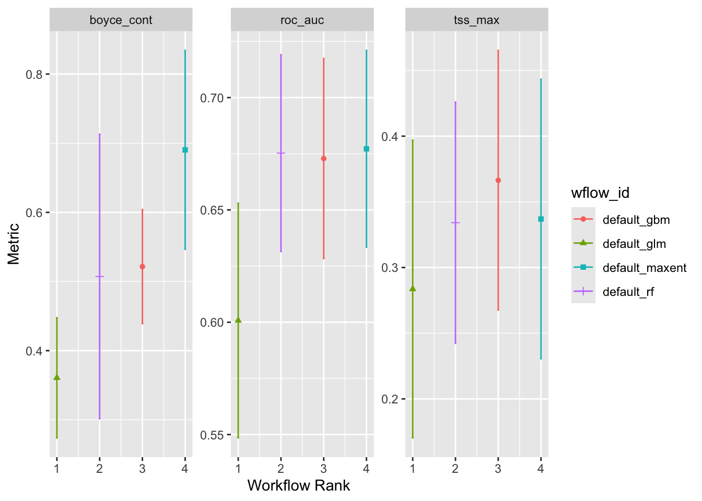

source("setup.R", echo = FALSE)
bb = get_bb(form = 'polygon')
coast = rnaturalearth::ne_coastline(scale = 'large', returnclass = 'sf') |>
sf::st_geometry()
preds = read_predictors(quick = TRUE)
model_input = read_obs("model_input")
mask = read_mask()Modeling
1 Fit the model by cross-validation
2 Recipe and models workflow
A recipe provides the scaffolding for subsequent steps. Note that the output is not a plain vanilla recipes recipe. Instead it is a special tidysdm recipe that is spatially aware - hence the coords element. Also note that we only pass in the head of the model_input since the recipe only needs to know what the variable types are.
rec <- recipe(head(model_input),
formula = class ~ .)
rec── Recipe ──────────────────────────────────────────────────────────────────────── Inputs Number of variables by roleoutcome: 1
predictor: 4
coords: 2Here we leverage the recipe to build workflows. Note that the models specified are provided by the tidysdm package rather than the standard parsnip models. Also note that we are specifying a maxnet model, but the engine is maxnet.
models <-
# create the workflow_set
workflow_set(
preproc = list(default = rec),
models = list(
# the standard glm specs
glm = tidysdm::sdm_spec_glm(),
# rf specs with tuning
rf = tidysdm::sdm_spec_rf(),
# boosted tree model (gbm) specs with tuning
gbm = tidysdm::sdm_spec_boost_tree(),
# maxent specs with tuning
maxent = tidysdm::sdm_spec_maxent()
),
# make all combinations of preproc and models,
cross = TRUE ) |>
# tweak controls to store information needed later to create the ensemble
option_add(control = tidysdm::control_ensemble_grid())
models# A workflow set/tibble: 4 × 4
wflow_id info option result
<chr> <list> <list> <list>
1 default_glm <tibble [1 × 4]> <opts[1]> <list [0]>
2 default_rf <tibble [1 × 4]> <opts[1]> <list [0]>
3 default_gbm <tibble [1 × 4]> <opts[1]> <list [0]>
4 default_maxent <tibble [1 × 4]> <opts[1]> <list [0]>Above you can see the models are arranged in a table (with list-columns to hold complex data types.) Currently, this is the skeleton used to guide the tuning step (that comes soon). Once we have tuned the models the info, option and result variables in model will be populated; for now the exist but are unpopulated. Also note that we still have not fed the model a complete dataset.
3 Cross folding
Before feed the data to the models we divide it into data set samples. We set up a spatial cross validation with three folds three folds (groups) split across a 5x5 sampling matrix. The idea behind foldings is to present different sets of data to develop the model, then we can look at the performance mean and variability.
set.seed(100)
input_cv <- spatial_block_cv(data = model_input, v = 3, n = 5)
autoplot(input_cv)
4 Tuning
Now we can tune the models using the fold-data. The following is a tuning excercise applied to each fold of the sample grouping.
set.seed(1234567)
models <- models |>
workflow_map("tune_grid",
resamples = input_cv,
grid = 3,
metrics = tidysdm::sdm_metric_set(),
verbose = TRUE )i No tuning parameters. `fit_resamples()` will be attemptedi 1 of 4 resampling: default_glm✔ 1 of 4 resampling: default_glm (305ms)i 2 of 4 tuning: default_rfi Creating pre-processing data to finalize unknown parameter: mtry✔ 2 of 4 tuning: default_rf (2.2s)i 3 of 4 tuning: default_gbmi Creating pre-processing data to finalize unknown parameter: mtry✔ 3 of 4 tuning: default_gbm (6s)i 4 of 4 tuning: default_maxent✔ 4 of 4 tuning: default_maxent (1.9s)models# A workflow set/tibble: 4 × 4
wflow_id info option result
<chr> <list> <list> <list>
1 default_glm <tibble [1 × 4]> <opts[4]> <rsmp[+]>
2 default_rf <tibble [1 × 4]> <opts[4]> <tune[+]>
3 default_gbm <tibble [1 × 4]> <opts[4]> <tune[+]>
4 default_maxent <tibble [1 × 4]> <opts[4]> <tune[+]>We can generate assessment plots based upon typical model metrics.
autoplot(models)
At this point you would rightly be wondering about these models. In our traditional approach we selected one model type, maxnet, and ran with that alone. Here we are trying 4 types of models, and we can see that they perform differently. But the breathtaking speed with which we can get to this step is a hallmark of tidymodels.
5 Ensembles
Currently these models are independent of each other, but we can form them into an ensemble.
ensemble = simple_ensemble() |>
add_member(models, metric = "boyce_cont")
ensembleA simple_ensemble of models
Members:
• default_glm
• default_rf
• default_gbm
• default_maxent
Available metrics:
• boyce_cont
• roc_auc
• tss_max
Metric used to tune workflows:
• boyce_contautoplot(ensemble)
ensemble |>
collect_metrics()# A tibble: 12 × 5
wflow_id .metric mean std_err n
<chr> <chr> <dbl> <dbl> <int>
1 default_glm boyce_cont 0.361 0.0528 3
2 default_glm roc_auc 0.601 0.0317 3
3 default_glm tss_max 0.284 0.0689 3
4 default_rf boyce_cont 0.507 0.125 3
5 default_rf roc_auc 0.675 0.0266 3
6 default_rf tss_max 0.334 0.0558 3
7 default_gbm boyce_cont 0.522 0.0501 3
8 default_gbm roc_auc 0.673 0.0271 3
9 default_gbm tss_max 0.366 0.0600 3
10 default_maxent boyce_cont 0.690 0.0873 3
11 default_maxent roc_auc 0.677 0.0266 3
12 default_maxent tss_max 0.337 0.0647 36 Saving models and ensembles
You can save a model or an ensemble of models using the write_model(), read_model(), write_ensemble() and read_ensemble() functions. These are wrapper functions that will hide the details, but allow you to save and restoire portable files.
ok = dir.create("data/model/tidysdm", recursive = TRUE)Warning in dir.create("data/model/tidysdm", recursive = TRUE):
'data/model/tidysdm' already existswrite_ensemble(ensemble, "data/model/tidysdm/v1_ensemble.rds")